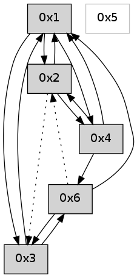

>> << IDX [start] -100 -25 -5 +0 +5 +25 +100 [625.12699604]
 Previous packets
----------------------------------------------------------------------
620.205918 beacon01(adaf) #0 coord=01,02,05,03,04,06 cycle=432.0ms assoc
-- color-indic=0 64 26 0f
620.215878 beacon02(adaf) #0 coord=01,02,05,03,04,06 cycle=432.0ms assoc 64 77 f0
620.225880 beacon05(adaf) #0 coord=01,02,05,03,04,06 cycle=432.0ms assoc 64 d1 da
620.235880 beacon03(adaf) #0 coord=01,02,05,03,04,06 cycle=432.0ms assoc 64 4d fe
620.245879 beacon04(adaf) #0 coord=01,02,05,03,04,06 cycle=432.0ms assoc 64 eb d4
620.255881 beacon06(adaf) #0 coord=01,02,05,03,04,06 cycle=432.0ms assoc 64 9f c8
620.267547 [Hello(4): seq=421 sym=1,2 asym=6 sysInfo= stat=1:0,0,0,0/2:15,0,0,0/6:0,0,0,0]
620.270613 [Hello(1): seq=320 sym=2,3,4 sysInfo= stat=2:12,0,0,0/3:1,0,0,0/4:0,0,0,0]
----------------------------------------------------------------------
620.698025 beacon01(adaf) #0 coord=01,02,05,03,04,06 cycle=432.0ms assoc
-- color-indic=0 64 e2 60
620.707986 beacon02(adaf) #0 coord=01,02,05,03,04,06 cycle=432.0ms assoc 64 b3 9f
620.717986 beacon05(adaf) #0 coord=01,02,05,03,04,06 cycle=432.0ms assoc 64 15 b5
620.727986 beacon03(adaf) #0 coord=01,02,05,03,04,06 cycle=432.0ms assoc 64 89 91
620.737987 beacon04(adaf) #0 coord=01,02,05,03,04,06 cycle=432.0ms assoc 64 2f bb
620.747987 beacon06(adaf) #0 coord=01,02,05,03,04,06 cycle=432.0ms assoc 64 5b a7
620.759671 [Hello(2): seq=916 sym=4,1 asym=3 sysInfo= stat=4:0,0,0,0/1:4,0,0,0/3:15,0,0,0]
----------------------------------------------------------------------
621.190134 beacon01(adaf) #0 coord=01,02,05,03,04,06 cycle=432.0ms assoc
-- color-indic=0 64 ae d0
621.200094 beacon02(adaf) #0 coord=01,02,05,03,04,06 cycle=432.0ms assoc 64 ff 2f
621.210095 beacon05(adaf) #0 coord=01,02,05,03,04,06 cycle=432.0ms assoc 64 59 05
621.220094 beacon03(adaf) #0 coord=01,02,05,03,04,06 cycle=432.0ms assoc 64 c5 21
621.230097 beacon04(adaf) #0 coord=01,02,05,03,04,06 cycle=432.0ms assoc 64 63 0b
621.240096 beacon06(adaf) #0 coord=01,02,05,03,04,06 cycle=432.0ms assoc 64 17 17
621.250902 [Hello(1): seq=321 sym=2,3,4 sysInfo= stat=2:13,0,0,0/3:1,0,0,0/4:0,0,0,0]
621.255451 [Hello(4): seq=422 sym=1,2 asym=6 sysInfo= stat=1:1,0,0,0/2:0,0,0,0/6:0,0,0,0]
----------------------------------------------------------------------
621.682241 beacon01(adaf) #0 coord=01,02,05,03,04,06 cycle=432.0ms assoc
-- color-indic=0 64 6a bf
621.692203 beacon02(adaf) #0 coord=01,02,05,03,04,06 cycle=432.0ms assoc 64 3b 40
621.702202 beacon05(adaf) #0 coord=01,02,05,03,04,06 cycle=432.0ms assoc 64 9d 6a
621.712202 beacon03(adaf) #0 coord=01,02,05,03,04,06 cycle=432.0ms assoc 64 01 4e
621.722202 beacon04(adaf) #0 coord=01,02,05,03,04,06 cycle=432.0ms assoc 64 a7 64
621.732202 beacon06(adaf) #0 coord=01,02,05,03,04,06 cycle=432.0ms assoc 64 d3 78
621.743914 [Hello(2): seq=917 sym=4,1 asym=3 sysInfo= stat=4:0,0,0,0/1:5,0,0,0/3:0,0,0,0]
----------------------------------------------------------------------
622.174349 beacon01(adaf) #0 coord=01,02,05,03,04,06 cycle=432.0ms assoc
-- color-indic=0 64 27 b8
622.184311 beacon02(adaf) #0 coord=01,02,05,03,04,06 cycle=432.0ms assoc 64 76 47
622.194310 beacon05(adaf) #0 coord=01,02,05,03,04,06 cycle=432.0ms assoc 64 d0 6d
622.204311 beacon03(adaf) #0 coord=01,02,05,03,04,06 cycle=432.0ms assoc 64 4c 49
622.214311 beacon04(adaf) #0 coord=01,02,05,03,04,06 cycle=432.0ms assoc 64 ea 63
622.224311 beacon06(adaf) #0 coord=01,02,05,03,04,06 cycle=432.0ms assoc 64 9e 7f
622.235733 [Hello(1): seq=322 sym=2,3,4 sysInfo= stat=2:13,0,0,0/3:2,0,0,0/4:0,0,0,0]
622.239644 [Hello(4): seq=423 sym=6,1,2 sysInfo= stat=6:1,0,0,0/1:1,0,0,0/2:0,0,0,0]
----------------------------------------------------------------------
622.666459 beacon01(adaf) #0 coord=01,02,05,03,04,06 cycle=432.0ms assoc
-- color-indic=0 64 e3 d7
622.676420 beacon02(adaf) #0 coord=01,02,05,03,04,06 cycle=432.0ms assoc 64 b2 28
622.686420 beacon05(adaf) #0 coord=01,02,05,03,04,06 cycle=432.0ms assoc 64 14 02
622.696420 beacon03(adaf) #0 coord=01,02,05,03,04,06 cycle=432.0ms assoc 64 88 26
622.706420 beacon04(adaf) #0 coord=01,02,05,03,04,06 cycle=432.0ms assoc 64 2e 0c
622.716421 beacon06(adaf) #0 coord=01,02,05,03,04,06 cycle=432.0ms assoc 64 5a 10
622.728109 [Hello(2): seq=918 sym=4,1 asym=3 sysInfo= stat=4:0,0,0,0/1:6,0,0,0/3:1,0,0,0]
----------------------------------------------------------------------
623.158567 beacon01(adaf) #0 coord=01,02,05,03,04,06 cycle=432.0ms assoc
-- color-indic=0 64 af 67
623.168527 beacon02(adaf) #0 coord=01,02,05,03,04,06 cycle=432.0ms assoc 64 fe 98
623.178528 beacon05(adaf) #0 coord=01,02,05,03,04,06 cycle=432.0ms assoc 64 58 b2
623.188528 beacon03(adaf) #0 coord=01,02,05,03,04,06 cycle=432.0ms assoc 64 c4 96
623.198528 beacon04(adaf) #0 coord=01,02,05,03,04,06 cycle=432.0ms assoc 64 62 bc
623.208528 beacon06(adaf) #0 coord=01,02,05,03,04,06 cycle=432.0ms assoc 64 16 a0
623.219294 [Hello(1): seq=323 sym=2,3,4 sysInfo= stat=2:14,0,0,0/3:2,0,0,0/4:1,0,0,0]
623.223848 [Hello(4): seq=424 sym=6,1,2 sysInfo= stat=6:1,0,0,0/1:1,0,0,0/2:1,0,0,0]
----------------------------------------------------------------------
623.650674 beacon01(adaf) #0 coord=01,02,05,03,04,06 cycle=432.0ms assoc
-- color-indic=0 64 6b 08
623.660635 beacon02(adaf) #0 coord=01,02,05,03,04,06 cycle=432.0ms assoc 64 3a f7
623.670635 beacon05(adaf) #0 coord=01,02,05,03,04,06 cycle=432.0ms assoc 64 9c dd
623.680637 beacon03(adaf) #0 coord=01,02,05,03,04,06 cycle=432.0ms assoc 64 00 f9
623.690636 beacon04(adaf) #0 coord=01,02,05,03,04,06 cycle=432.0ms assoc 64 a6 d3
623.700636 beacon06(adaf) #0 coord=01,02,05,03,04,06 cycle=432.0ms assoc 64 d2 cf
623.712343 [Hello(2): seq=919 sym=4,1 asym=3 sysInfo= stat=4:0,0,0,0/1:7,0,0,0/3:2,0,0,0]
----------------------------------------------------------------------
624.142782 beacon01(adaf) #0 coord=01,02,05,03,04,06 cycle=432.0ms assoc
-- color-indic=0 64 13 a5
624.152743 beacon02(adaf) #0 coord=01,02,05,03,04,06 cycle=432.0ms assoc 64 42 5a
624.162742 beacon05(adaf) #0 coord=01,02,05,03,04,06 cycle=432.0ms assoc 64 e4 70
624.172743 beacon03(adaf) #0 coord=01,02,05,03,04,06 cycle=432.0ms assoc 64 78 54
624.182742 beacon04(adaf) #0 coord=01,02,05,03,04,06 cycle=432.0ms assoc 64 de 7e
624.192743 beacon06(adaf) #0 coord=01,02,05,03,04,06 cycle=432.0ms assoc 64 aa 62
624.204400 [Hello(4): seq=425 sym=6,1,2 sysInfo= stat=6:1,0,0,0/1:1,0,0,0/2:2,0,0,0]
624.210381 [Hello(1): seq=324 sym=2,3,4 sysInfo= stat=2:15,0,0,0/3:2,0,0,0/4:2,0,0,0]
----------------------------------------------------------------------
624.634889 beacon01(adaf) #0 coord=01,02,05,03,04,06 cycle=432.0ms assoc
-- color-indic=0 64 d7 ca
624.644850 beacon02(adaf) #0 coord=01,02,05,03,04,06 cycle=432.0ms assoc 64 86 35
624.654849 beacon05(adaf) #0 coord=01,02,05,03,04,06 cycle=432.0ms assoc 64 20 1f
624.664850 beacon03(adaf) #0 coord=01,02,05,03,04,06 cycle=432.0ms assoc 64 bc 3b
624.674851 beacon04(adaf) #0 coord=01,02,05,03,04,06 cycle=432.0ms assoc 64 1a 11
624.684851 beacon06(adaf) #0 coord=01,02,05,03,04,06 cycle=432.0ms assoc 64 6e 0d
624.696538 [Hello(2): seq=920 sym=4,1 asym=3 sysInfo= stat=4:0,0,0,0/1:8,0,0,0/3:3,0,0,0]